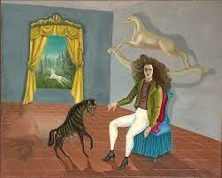

Self-Portrait
Leonora Carrington · c. 1937–38 · Oil on canvas · 65 × 81.3 cm · The Metropolitan Museum of Art, New York
In copyright. Look and learn: shown for study, not for download.
Leonora Carrington began this self-portrait in London in 1937 and finished it in Paris in 1938; she was about twenty. When the Second World War began she left it with Max Ernst, who took it to New York in 1941 and lent it to the Museum of Modern Art's Twentieth Century Portraits show the next year. He later gave it to the dealer Pierre Matisse, son of Henri Matisse. The Pierre and Maria-Gaetana Matisse Foundation gave it to the Metropolitan Museum in 2002.